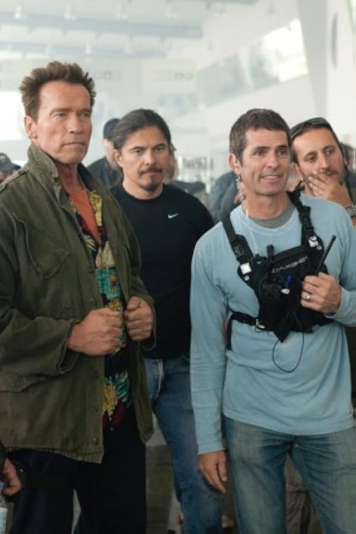

Noon Orsatti
Son of Ernie F. He first stepped onto a set at six, filming The Seduction of a Nerd (released 1970), and joined the Screen Actors Guild in 1969; his career proper began on The Winds of War, the epic ABC miniseries shot 1980–81, when he was 18. Early on he also booked a run of national commercials – McDonald's, Sara Lee, Polaroid and more.
Stunt coordinator and 2nd-unit director. Won the 2024 Taurus World Stunt Award (Extraction 2); in the SAG Awards stunt-ensemble nominees for The Falcon and the Winter Soldier (2022).
Chad Stahelski recalls working for Ernie F. and Noon on NYPD Blue, The Pretender and Profiler – and that Ernie F. sent him to the Matrix audition.
Two 2022 Primetime Emmy nominations for Hawkeye (stunt coordination; stunt performance, "Echoes"). Co-coordinated The Expendables (2010) with Stahelski.
His long-running television work included taking over Charmed’s stunt coordination and second-unit direction from his father; the family-show timeline card tells that collaboration in full.
Credits in the archive (216)
- 1970 The Seduction of a Nerd Child performer
- 1980 The Winds of War TV Stunts · first project
- 1982 Dead Men Don't Wear Plaid Stunts
- 1983 Amityville 3-D Stunts
- 1984 St. Elsewhere TV as Tim · 1 episode
- 1985 Falcon Crest TV as Punk · 2 episodes
- 1985 Mischief Stunts
- 1985 Secret Admirer Stunts
- 1986 Back to School Stunts
- 1986 Legal Eagles Stunts
- 1986 The Golden Child Stunt player (as E. Noon Orsatti)
- 1986 Welcome to 18 Boy in Car
- 1987 Amazon Women on the Moon Stunts
- 1987 Back to the Beach Surfers & Punks
- 1987 Big Shots Stunts
- 1987 Death Wish 4: The Crackdown Stunts
- 1987 Less Than Zero Stunts
- 1987 The Allnighter Stunts
- 1987 Winners Take All Stunts
- 1988 A Nightmare on Elm Street 4: The Dream Master Stunt double: Freddy Krueger (Robert Englund)
- 1988 A Stoning in Fulham County Crew · Actor
- 1988 Above the Law Stunts
- 1988 Bad Dreams Stunts
- 1988 Beetlejuice Stunt player
- 1988 Critters 2 Stunts
- 1988 Dangerous Curves Stunts
- 1988 Dead Heat Stunts
- 1988 Dudes Stunt player
- 1988 Journey to the Center of the Earth Stunts
- 1988 Let's Get Lost Self
- 1988 Messenger of Death Stunts
- 1988 Moonwalker Stuntman
- 1988 Shakedown Stunt player
- 1988 To Die For Stunts
- 1988 Uninvited Stunts
- 1989 Alien Nation TV Actor: Svabo (3 eps, 1989)
- 1989 Bill & Ted's Excellent Adventure Stunts
- 1989 C.H.U.D. II: Bud the Chud Stunts
- 1989 Cage Stunts
- 1989 Happy Together Stunt Coordinator
- 1989 Just the Ten of Us TV Actor (Tough Guy), "Simple Gifts" (1989)
- 1989 Kinjite: Forbidden Subjects Stunts
- 1989 Loverboy Stunts
- 1989 National Lampoon's Christmas Vacation Stunts
- 1989 One Man Force Stunts
- 1989 Perfect Strangers TV Actor: Grant Larkin (1 ep, 1989: "Good Skates")
- 1989 Phantom of the Mall: Eric's Revenge Stunts
- 1989 Rush Week Stunt Coordinator
- 1989 Under The Boardwalk Stunt player
- 1990 1st & Ten TV Actor (Purse Snatcher)
- 1990 Almost an Angel Stunts
- 1990 Angel Town Actor: Drunken frat man
- 1990 Donor Stunts
- 1990 Fatal Charm Stunts
- 1990 Ghost Dad Stunts
- 1990 Lambada Stunts
- 1990 Men at Work Stunts
- 1990 Night of the Wilding Stunts
- 1990 Opportunity Knocks Stunts
- 1991 A Gnome Named Gnorm Stunts
- 1991 Another You Stunts
- 1991 Billy Bathgate Stunts
- 1991 Career Opportunities Stunts
- 1991 Cool As Ice Stunt player
- 1991 Eyes of an Angel Stunts
- 1991 Harley Davidson And The Marlboro Man Stunt player
- 1991 Highway to Hell Stunts
- 1991 Hot Shots! Stunts
- 1991 Point Break Stunt double: Keanu Reeves (gas station fight)
- 1991 Prayer of the Rollerboys Stunts
- 1991 Ricochet Stunts
- 1991 Star Trek VI: The Undiscovered Country Stunts · Actor: Excelsior Crewman
- 1991 The Taking of Beverly Hills Stunts
- 1992 A River Runs Through It Stunts
- 1992 Baywatch TV Actor: Todd (1 ep, 1992: "Shark's Cove")
- 1992 Into the Sun Addl stunt coord
- 1992 Knots Landing TV as Orderly · 1 episode
- 1992 Nickel & Dime Stunts
- 1992 Red Shoe Diaries TV Stunt Coordinator (entire series) · Stunt double: David Duchovny
- 1992 Sleepwalkers Stunt double: Brian Krause
- 1992 The Double 0 Kid Actor
- 1993 Benny & Joon Stunt Coordinator · Stunt double: Johnny Depp
- 1993 Hot Shots! Part Deux Stunts · Stunt double: Jon Cryer
- 1993 Jailbait Stunts
- 1993 King Of The Hill Stunt coord
- 1993 NYPD Blue TV Stunt player (several episodes)
- 1993 Rescue Me Stunts
- 1993 Sister Act 2: Back in the Habit Stunts
- 1993 The Beverly Hillbillies Stunts
- 1993 The Good Son Stunts
- 1993 True Romance Stunts
- 1994 Airheads Stunts
- 1994 Flashfire Stunts
- 1994 Getting Even with Dad Stunts
- 1994 Mixed Nuts Stunts
- 1994 Past Tense Stunts
- 1994 Shattered Image Stunts
- 1994 Sisters TV Stunt double: George Clooney
- 1995 Coldblooded Stunts
- 1995 Perfect Alibi Stunts
- 1995 Rage Stunts
- 1995 Tall Tale Stunts · Additional Stunt Coordinator
- 1995 Theodore Rex Stunts
- 1996 A Very Brady Sequel Stunts
- 1996 Don't Look Back Stunts
- 1996 Ed Goon #2
- 1996 Larger Than Life Stunt double: Matthew McConaughey
- 1996 Marshal Law Stunts
- 1996 Primal Fear Stunts
- 1996 Profiler TV Stunt coordinator (11 eps, 1997–1998)
- 1996 Riot Stunts
- 1996 Sgt. Bilko Stunts
- 1996 The Pretender TV Stunt coordinator (all 4 seasons, ~86 eps, 1996–2000)
- 1996 The Sweeper Stunts
- 1996 The Truth About Cats & Dogs Stunts
- 1996 Tremors 2: Aftershocks Stunt coordinator
- 1997 Alien Resurrection Stunts
- 1997 Brooklyn South TV Stunt Coordinator (1997–1998)
- 1997 City of Industry Additional Stunt Coordinator
- 1997 Just Write Stunt Coordinator
- 1997 She's So Lovely Cop #3
- 1997 Sins of the Mind Stunt Coordinator
- 1997 Team Knight Rider TV Actor
- 1997 The Big Fall Stunts
- 1997 The Love Bug Stunt driver (Herbie)
- 1997 The Practice TV Stunt double (seasons 2–4, 1997–2000)
- 1997 Trial and Error Stunts
- 1998 American History X Stunt Coordinator
- 1998 Brink! Stunts
- 1998 CHiPs '99 Stunts
- 1998 Charmed TV Stunt Coordinator · Second Unit Director (~128 episodes, through the finale)
- 1998 Fallen Stunts
- 1998 Fear and Loathing in Las Vegas Stunt Coordinator
- 1998 Pleasantville Additional Stunt Coordinator
- 1998 Thirst Stunts
- 1999 My Favorite Martian Stunts
- 1999 Silk Hope Stunt Coordinator
- 1999 The Glass Jar Stunts
- 1999 The Jamie Foxx Show TV as The Mugger · 1 episode
- 1999 The Limey Stunts
- 1999 The Runner Stunt Coordinator
- 2000 3 Strikes Stunts
- 2000 Kiss Tomorrow Goodbye Stunt Coordinator
- 2000 Magicians Stunts
- 2000 Picking Up the Pieces Stunts
- 2000 Strong Medicine TV Crew · 1 episode
- 2001 Grounded for Life TV Fight choreographer (1 ep, 2001)
- 2001 Joe Dirt Stunts
- 2001 Joe Somebody Stunt Coordinator
- 2001 Not Another Teen Movie Stunts
- 2001 Pressure 4-5: Beat the World Music Video Stunts
- 2001 Rennie's Landing Stunts
- 2001 Stop at Nothing Second unit director
- 2001 Tomcats Stunts
- 2001 Tremors 3: Back to Perfection Stunt Coordinator
- 2002 Frank McKlusky, C.I. Stunt double: Frank McKlusky (Dave Sheridan)
- 2003 Carnivàle TV Additional Stunt Coordinator
- 2003 Cheaper by the Dozen Stunts
- 2003 Just Married Stunts
- 2003 Scrubs TV Stunt Coordinator (about 6 seasons, 2003–2009)
- 2003 The Cooler Stunt Coordinator
- 2003 The League of Extraordinary Gentlemen Stunts
- 2004 Christmas with the Kranks Stunts
- 2004 Entourage TV Stunt coordinator / stunt driver (5 eps, 2005–2007)
- 2004 Tremors 4: The Legend Begins Stunt Coordinator
- 2005 Happy Endings Stunt Coordinator
- 2005 The Closer TV Stunt Coordinator (seasons 1–4, 2005–2009)
- 2005 Yours, Mine & Ours Stunts
- 2006 Nip/Tuck TV Stunt Coordinator (season 3)
- 2006 Running with Scissors Stunt Coordinator
- 2006 The Initiation of Sarah Stunt Coordinator
- 2007 Moonlight TV Second unit director (12 eps)
- 2008 Bangkok Dangerous Stunt co-coordinator
- 2008 Rambo Second Unit Stunt Coordinator
- 2008 Speed Racer Stunts
- 2009 Angels & Demons Stunts · Stunt double: Ewan McGregor (final fire burn)
- 2009 Ninja Assassin Stunt Coordinator · Stunts
- 2010 Cherry Stunt Coordinator
- 2010 Once Fallen Stunt Coordinator
- 2010 The Expendables Co-Stunt Coordinator · Second Unit Director
- 2011 Conan the Barbarian Stunt Coordinator
- 2011 Drive Angry Stunts
- 2011 In Time Stunts
- 2011 The Mechanic Stunt Coordinator
- 2011 Trespass Stunt Coordinator
- 2012 Bullet to the Head Stunt Coordinator
- 2012 Stolen Second unit director
- 2012 The Expendables 2 Stunt Coordinator
- 2013 Escape Plan Stunt Coordinator
- 2013 The Hunger Games: Catching Fire Stunts
- 2014 Ride Along Stunt Coordinator
- 2016 Captain America: Civil War Stunts
- 2017 John Wick: Chapter 2 Stunts
- 2017 Spider-Man: Homecoming Stunts
- 2018 Avengers: Infinity War Stunts
- 2018 Black Panther Stunts
- 2019 Avengers: Endgame Stunts
- 2019 Gemini Man Stunts
- 2019 Skyfire Action director
- 2020 Extraction Stunt Coordinator (reshoots)
- 2021 Hawkeye TV Co-Stunt Coordinator · 6 episodes · 2 Emmy nominations (2022)
- 2021 The Falcon and the Winter Soldier TV Rigging stunts
- 2022 Secret Headquarters Stunt rigger
- 2023 Extraction 2 Lead stunt coordinator (Taurus World Stunt Award)
- 2024 Borderlands Second unit director
- 2024 Fly Me to the Moon Stunts
- 2025 Bride Hard Second unit director & stunt coordinator · Actor: Limo Driver
- 2025 Captain America: Brave New World Assistant Stunt Rigging Coordinator
- 2025 Madea's Destination Wedding Stunts
- 2025 The Runarounds TV Stunt Driver
- 2025 Thunderbolts* Second Unit Stunt Coordinator
- 2025 You're Cordially Invited Second unit director
- 2026 Fort Valor Stunt Coordinator
- 2026 The Terminal List TV Additional stunt coordinator (Season 2)
- 2027 John Rambo Supervising Stunt Coordinator (upcoming, 2027)
- 2027 Judgment Day Stunt Coordinator (upcoming, 2027)
On the timeline
The Orsatti family begins in Hollywood
1923 is the founding year on the family's own crest (est. 1923); Noon Orsatti's IMDb bio also says the Orsatti name has been synonymous with film making since 1923.
Noon Orsatti joins SAG
At six, while filming The Seduction of a Nerd with Wally Cox and Julie Newmar, Noon Orsatti joined the Screen Actors Guild, the start of a career that would span more than five decades.
Telefunken Around
In 1986 Bruce Weber photographed Noon Orsatti riding dirt bikes with stuntmen Matt McColm and Andy Gill for Telefunken, according to the family, with a helmet-mounted Telefunken VideoMovie camcorder and the brand's diamond logo in the pictures. Noon recalls that after the shoot Matt went on to model for Ralph Lauren and Calvin Klein.
Telefunken was born in Berlin on May 27, 1903, when Kaiser Wilhelm II pushed rivals AEG and Siemens & Halske to pool their wireless-telegraphy patents; the name came from the company's telegraph address. It sold the world's first electronic television sets with cathode-ray tubes in 1934, and in the early 1960s its engineer Walter Bruch developed the PAL color-TV system used across much of the world. After parent AEG-Telefunken went bankrupt in 1982, France's Thomson bought the consumer electronics division in 1983 and kept the Telefunken name going, which is how a JVC-designed VideoMovie camcorder came to wear the Telefunken badge by the time of this shoot.
In front of Bruce Weber's camera
Father and son, Ernie F. and Noon Orsatti sat together for a photo shoot with fashion photographer Bruce Weber. Noon also turns up in Weber's Oscar-nominated Chet Baker documentary Let's Get Lost (1988).
The horseback-vaulting picture below became one of Weber's published fine-art prints, "Stuntmen, Point Conception Beach, Santa Barbara, CA, 1987." Galería Alta, which sells it as a signed gelatin-silver print, says it was made on the beach in 1987 for a commercial sitting, with the stuntmen in Calvin Klein clothes, and that "the frame outlived its assignment."
"The only one that truly understands Freddy"
On A Nightmare on Elm Street 4: The Dream Master, Noon Orsatti doubled Freddy Krueger. Robert Englund told him, "You're the only one that truly understands Freddy" – and left Noon on set to deliver Freddy's dialogue and play the scenes on camera himself.
An original 87eleven member
Noon Orsatti was one of the original members of 87eleven, the stunt team formed by Chad Stahelski and David Leitch in 1997 that went on to reshape Hollywood action.
Charmed: a family show
Charmed was a family show. Ernie F. Orsatti coordinated its stunts from the start, Rowbie Orsatti got his first screen credit on it in 1998, and in season 3 Noon Orsatti took over from his father and ran the stunts – and directed second unit – through the 2006 series finale, about 128 episodes. After Charmed ended, Noon turned his focus back to feature films. Eight seasons of witches, demons and weekly fights made Charmed a training ground: Noon brought in performers who were just starting out, and a generation of stunt people launched their careers on his set.
The Orsatti TV years
Through the late 1990s and 2000s Ernie F. and Noon Orsatti coordinated stunts across a remarkable run of network and cable series – Charmed, Carnivàle, Entourage, It's Always Sunny in Philadelphia, Nip/Tuck, The Closer, Big Love and more. The family recalls a stretch when father and son were running more shows than anyone in town.
A land of the real
Several stunt performers who worked for Noon Orsatti went on to direct: Chad Stahelski (John Wick), David Leitch (Deadpool 2), Sam Hargrave (Extraction) and J.J. Perry (Day Shift). Noon credits their attention to detail for the transition. His own approach stayed old school: practical action on the ground, with real cars, real people and real jumps.
Noon earns his DGA card
Noon Orsatti earned his Directors Guild of America card as second unit director on Stop at Nothing (2001).
A personal hiatus
After finishing work on Ride Along around 2012, Noon Orsatti stepped away from the business for a personal, life-changing adventure. He returned around 2015, when he was asked to work on Captain America: Civil War.
Two Emmy nominations for Hawkeye
Noon Orsatti earned two Primetime Emmy nominations for Marvel's Hawkeye in 2022: Outstanding Stunt Coordination for a Comedy Series, shared with Heidi Moneymaker, and Outstanding Stunt Performance for the episode "Echoes." His son Rowbie worked the same series as a stunt performer.
Taurus World Stunt Award
Noon Orsatti wins the Taurus World Stunt Award for Best Stunt Coordinator and/or 2nd Unit Director for Extraction 2 – the third generation of the family in film.
Sources: imdb.com · en.wikipedia.org · actorawards.org · ew.com · televisionacademy.com · svenskfilmdatabas.se · en.wikipedia.org · imdb.com · themoviedb.org · family · Orsatti family (Noon Orsatti)